Click anywhere to close
Click anywhere to close
Ponto QA Tagger
Read each section carefully. You must complete this guide before you can start the test.
What you'll learn:
Before you tag
The goal: find a "Good Quality Image of the location on a different day."
For every image pair, ask yourself:
Is the output image different enough from the input? (not just the same photo with minor tweaks — people, cars, sky, etc.)
Does it contain any weird text, signage, or objects that shouldn't be there?
Does the output image look natural? (not an empty bar, floating furniture, impossible scene, etc.)
Are there any other issues? (bad crop, wiped-out building, wrong environment)
Case 1
The output looks good and doesn't need editing.
"Good Quality Image of the location on a different day"
Examples — click to enlarge
Different lighting, same location
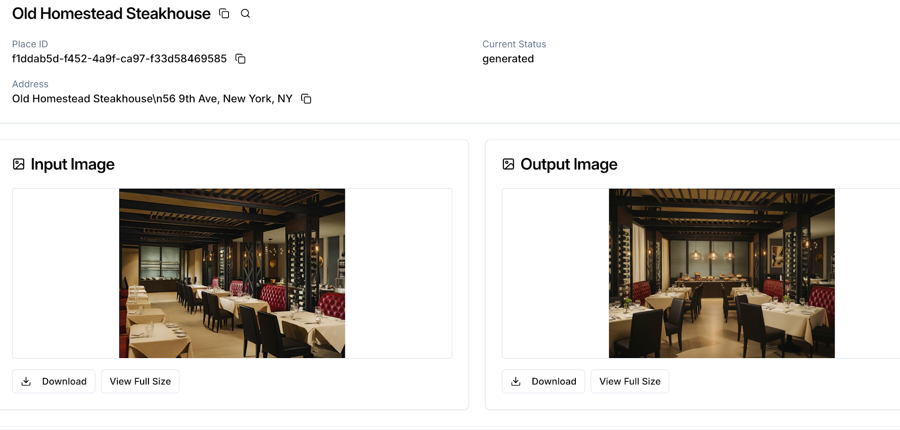
Natural storefront, clearly different day
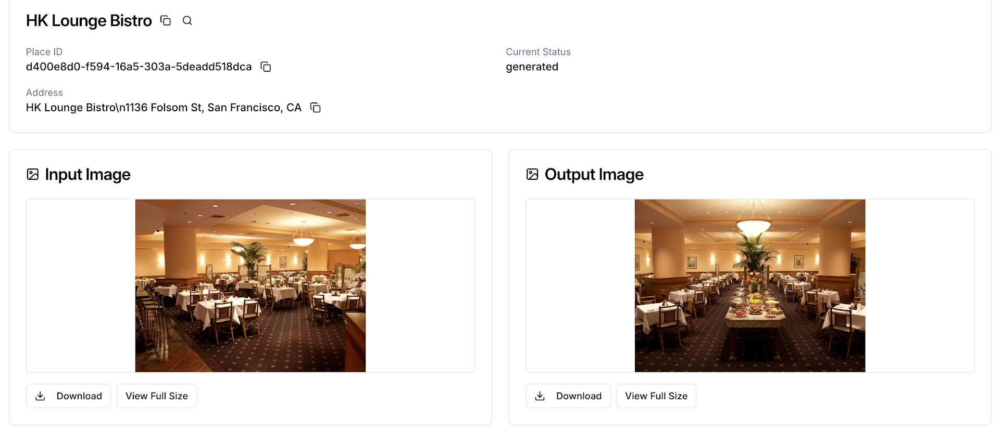
Clean output, good quality
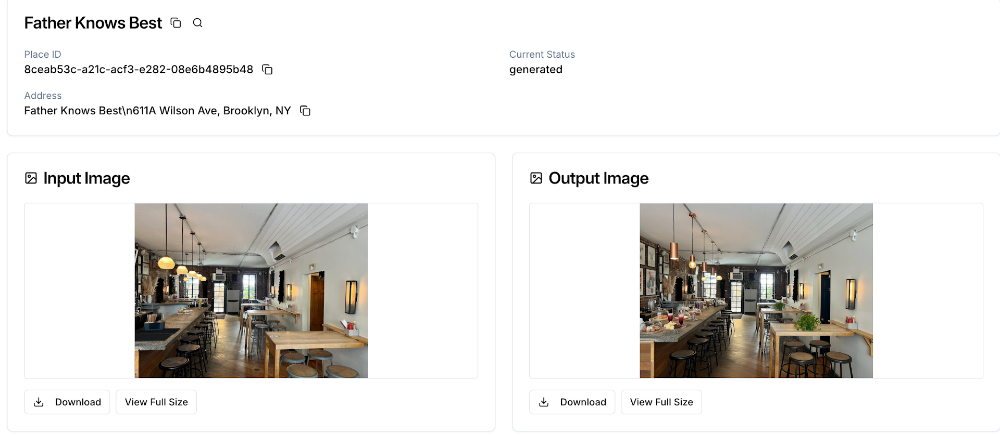
Case 2
The output is close but needs a quick design edit — wrong/missing signage, bad crop, unnatural element.
Examples — click to enlarge
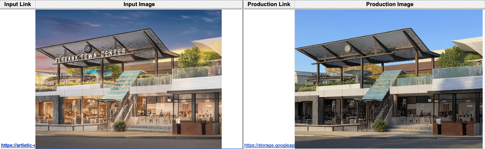
Main signage needs to be borrowed from original
The output didn't carry over the store's sign — a quick design fix, not a full regeneration.
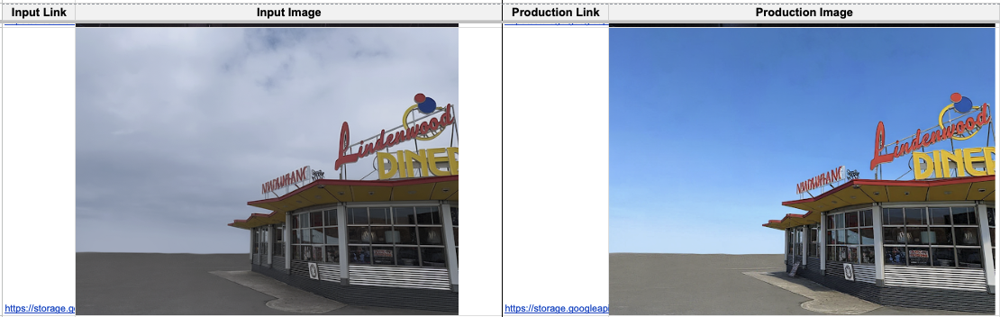
Crop photo — left side is not natural
The framing cuts off awkwardly. Needs a crop fix, not a regeneration.
Case 3
The AI output is too broken to fix with a quick edit. Two triggers:
Too similar
Output looks almost identical to the input
Weird AI artifacts
Strange objects, impossible scenes, wiped-out building
Examples — click to enlarge
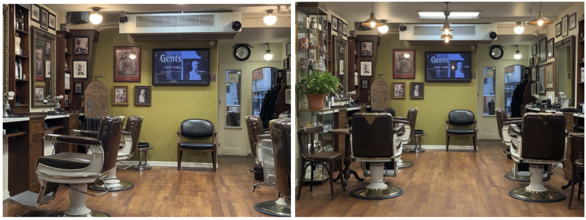
Awkward scene — salon chair placement
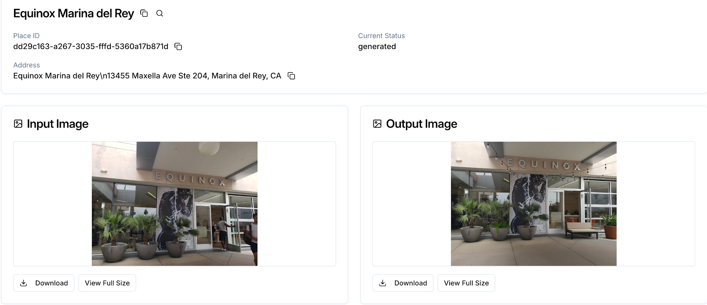
Awkward object (sofa) placement
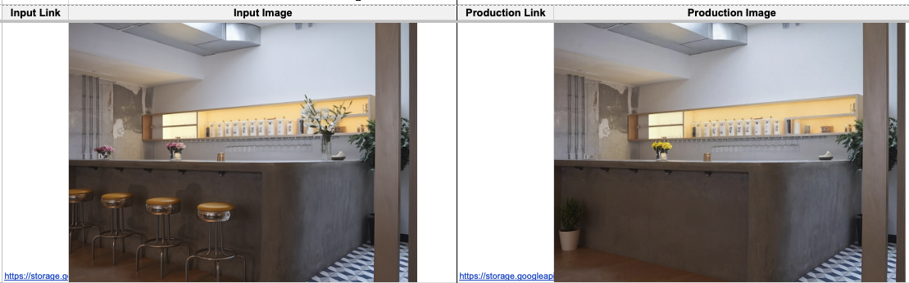
Missing stools + awkward plant
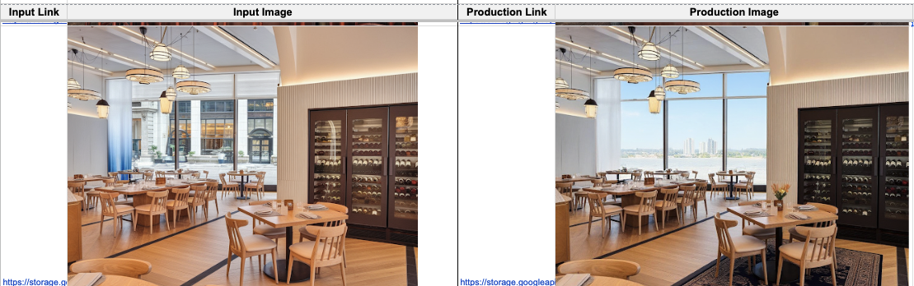
Street view changed to river view
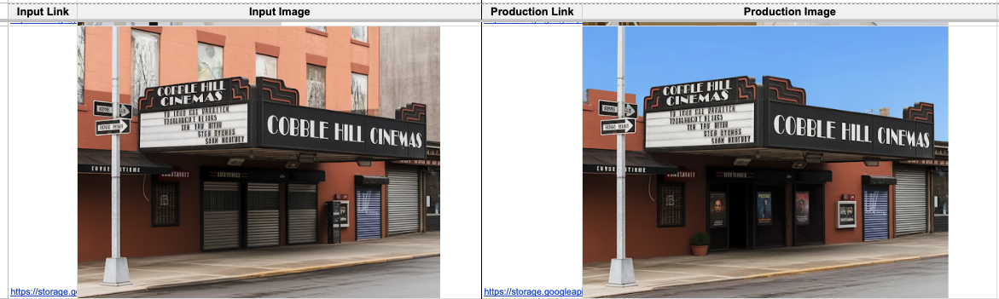
Building wiped out
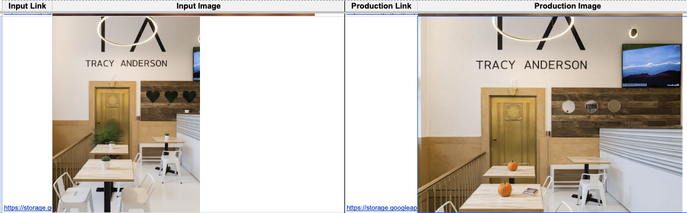
Weird object (pumpkin)
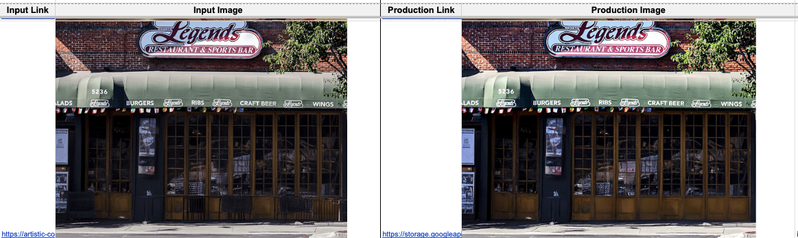
Image too similar
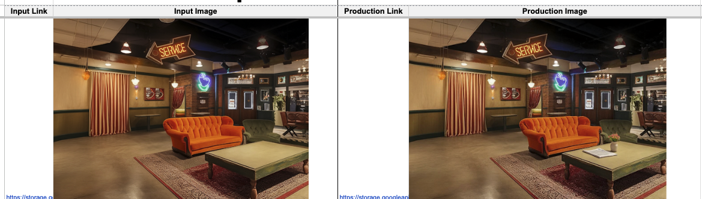
Image too similar
Case 4
The input photo is unusable — the AI can't do its job when the source isn't a proper storefront photo.
Flag the input when it shows:
Example — click to enlarge
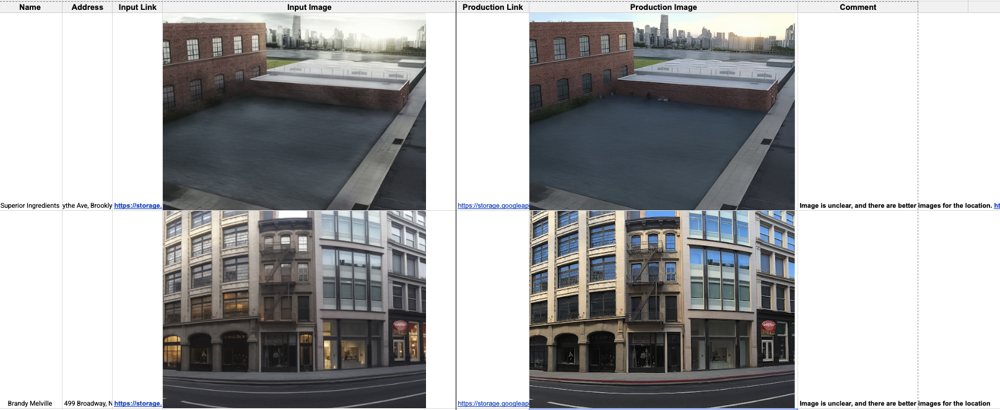
Input shows food — not the storefront. Mark as Needs New Input.
Case 5
The location is a skip category — we don't process these types of places.
Flag these location types
Quick check
Answer all 7 questions correctly to unlock the test. Wrong answers show the correct one — read and retry.
1. The output image looks almost identical to the input — same cars, same people, same lighting. What do you tag it?
2. The output looks great overall, but the store's sign is missing — there's a blank wall where the logo should be. What do you tag it?
3. The input photo shows a close-up of a bowl of ramen — not the restaurant exterior at all. What do you tag it?
4. The location is a dental clinic. The output image looks fine. What do you tag it?
5. The output image has a large sofa floating in front of the storefront in a physically impossible way. What do you tag it?
6. The output looks like a completely different location — the street-view background was replaced with a river scene. What do you tag it?
7. The output is a natural-looking storefront image on a clear day, clearly different from the input, with no weird objects or missing signage. What do you tag it?
0 / 7 correct
You've read the full guideline and answered all questions correctly.